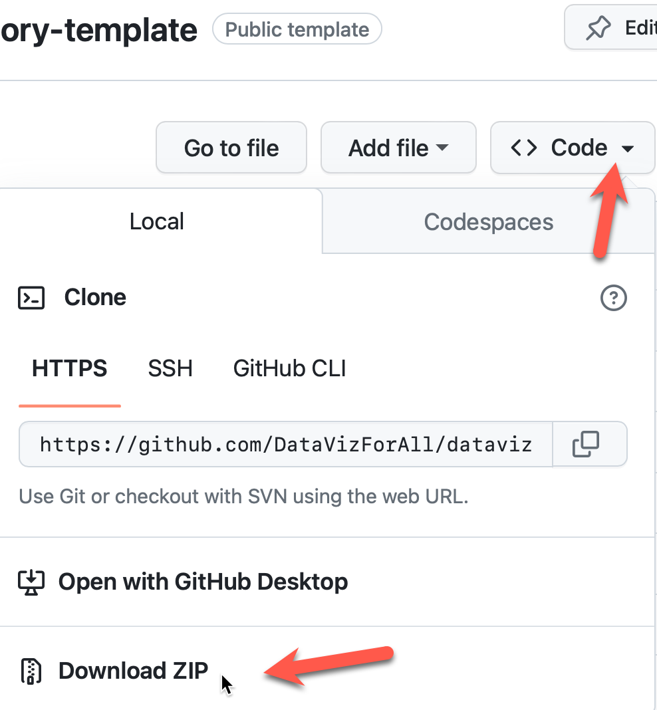
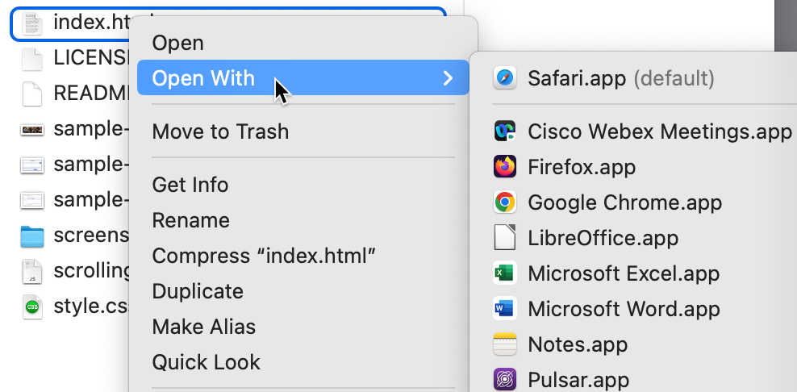

Methods & Sources
The median household income data was found through the American Community Survey's 5-year estimate of median household incomes in census tracts throughout all of Connecticut. From there the data was cleaned to only the 5 municipalities that we are focusing on. There are two census tracts without any data, tract 5245.02 had no household income reported in the survey. Tract 9801 had a population of 938, but no income or housing data are listed because 100% reside in the Hartford Correctional Center.
All of your data visualizations should be interactive. But if you need to insert a static image, you can upload a JPG or PNG to the GitHub repo, and insert it using the HTML image tag ("img") that points to a source image ("src") stored in your repo, as shown below:

Figure 2: Describe your image in a caption, and always credit the source if someone else created it.
Optional Subheaders
Use subheader tags (such as "h4") to break up long sections of text without creating a new section.
Collaborate with Co-Author
Compose and edit your data story in Google Docs, where co-authors can work simultaneously. When you're ready to migrate to GitHub, create ONE data story template in ONE author's GitHub account, because only ONE person can edit at a time. But the GitHub account owner can go to Settings > Collaborators > Add People to invite a co-author by using their GitHub username, as shown below. But be careful not to overwrite each other's edits!

Change background colors
This template uses Bootstrap background colors. For example, search this "index.html" file for "bg-primary", which sets the navigation bar (line 28), header (line 56), and footer (around line 245) to blue. Changing it to "bg-secondary" switches those colors to gray. Learn about other color options at the link above.
Quicker Edits on your Local Computer
Instead of slowly making edits on GitHub and waiting for them to appear online, you can quickly make multiple edits in your local computer and view them instantly in your browser. Here's a list of steps:
- Go to your GitHub repo and select Code > Download Zip and uncompress the folder.

- Install a code editor tool. My favorite free open-source option is the open-source Pulsar text editor, but there are many other options.
- Open the "index.html" file with your code editor and make edits.
- In your browser, go to File > Open to view the "index.html" file that is on your local computer. Since this version is temporarily stored on your local computer, your browser bar will display its location in a local format "file..." rather than the online format "https..."

- In your code editor, save changes to your "index.html" file, then refresh your browser to instantly view your changes made on your local computer.

- After editing, upload the contents of "index.html" from your local computer to your online GitHub account, then view your edits the public web.
Two Options for Tables
If you need to create a table, first try the Datawrapper Tables tool -- see HODV Chapter 8 -- and embed the results like this:
Table 1: Add your standalone caption here.
A second option is to use the Tables Generator HTML tool. Go to File > Import or manually enter your table data, then Generate the HTML code, and paste it here, similar to this sample:
| Header A |
Header B |
Header C |
| 123 |
456 |
789 |
| 987 |
654 |
321 |
Table 2: Add your caption here.